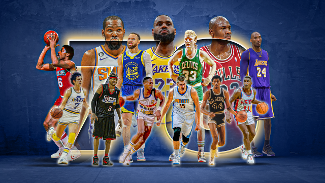

NBA Fan Site
A NBA é mais do que um campeonato, é um verdadeiro espetáculo! Aqui no NBA Fan Site, você encontra tudo sobre os maiores times, os astros que fazem história e os jogos que param o mundo do basquete.
De estatísticas detalhadas a curiosidades sobre as lendas da liga, nosso site traz análises, destaques e conteúdos exclusivos para quem vive e respira NBA. Seja para acompanhar seu time favorito ou relembrar momentos icônicos, este é o seu lugar!
Junte-se à comunidade e participe das discussões sobre os jogos, trocas, playoffs e tudo que rola dentro e fora das quadras. Afinal, o basquete é muito mais do que um jogo... é paixão!
